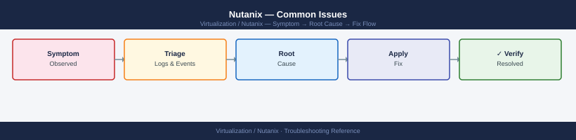

Nutanix — Common Issues¶

Diagnostic Flow¶
Before you begin¶
- Access: CVM SSH (nutanix) and Prism Element admin; AHV host root access may be needed for deep issues
- Baseline: Run
ncc --health_checks run_allas first step for any alert — it identifies the majority of issues automatically
CVM Down / Unreachable¶
Symptoms: allssh times out on one CVM; NCC reports cluster_services_status_check FAIL; Prism shows one node missing from Hardware view.
Triage:
# From another CVM — can you ping the affected CVM?
ping <cvm-ip>
# If reachable, try SSH
ssh nutanix@<cvm-ip>
genesis status
# If not reachable — check via AHV hypervisor console
# Log into the AHV host directly and check CVM VM state:
virsh list --all | grep CVM
virsh console CVM # (AHV) connect to CVM console
PING 10.20.30.45 56(84) bytes of data.
64 bytes from 10.20.30.45: icmp_seq=1 ttl=64 time=2.34 ms
64 bytes from 10.20.30.45: icmp_seq=2 ttl=64 time=1.89 ms
64 bytes from 10.20.30.45: icmp_seq=3 ttl=64 time=2.12 ms
--- 10.20.30.45 statistics ---
3 packets transmitted, 3 received, 0% packet loss, time 2004ms
Welcome to Nutanix CVM
nutanix@10.20.30.45's password:
Last login: Wed Jan 15 10:42:18 2025 from 10.20.30.1
nutanix@NTNX-CVM-45:~$ genesis status
Cluster UUID: 00051234-5678-90ab-cdef-1234567890ab
Cluster State: GOOD
Services Status: RUNNING
Leader: NTNX-CVM-42
id | name | state | leader
----|----------------------|------------|--------
1 | cassandra | RUNNING | False
2 | zookeeper | RUNNING | False
3 | cerebro | RUNNING | True
4 | prism | RUNNING | False
...
id | name | state | running
----|----------------------|------------|--------
1 | nfs_server | RUNNING | True
2 | iscsi_server | RUNNING | True
3 | stargate | RUNNING | True
id | name | state | running
----|----------------------|------------|--------
1 | curator | RUNNING | True
2 | medusa | RUNNING | True
Connected to domain 'CVM' console
[ENTER `^]` to quit console]
CVM login:
Common errors
ssh: connect to host 10.20.30.45 port 22: Connection timed out — Verify network connectivity and firewall rules allow SSH (port 22) from your management network to the CVM.
virsh: error: failed to get domain 'CVM' — Ensure you are logged into the correct AHV hypervisor host and use the exact CVM domain name (check with virsh list --all first).
Common causes and fixes:
| Cause | Fix |
|---|---|
| CVM powered off | Start CVM: virsh start CVM on the AHV host |
| Network issue | Verify CVM IP config on AHV: ip addr show on CVM |
| Genesis crashed | SSH to CVM → genesis restart |
| Hardware fault | Check AHV host IPMI for memory/disk errors |
| Out of disk space | df -h / on CVM — free space in /home/nutanix |
# Restart genesis (recovers most service crashes)
genesis restart
# If genesis won't start — reboot the CVM
sudo reboot # or via Prism → Hardware → host → reboot CVM
Genesis restart initiated...
Stopping genesis service...
Stopping Cassandra...
Stopping Zookeeper...
Genesis service stopped successfully.
Starting genesis service...
Starting Zookeeper...
Starting Cassandra...
Genesis service started successfully.
Genesis is now running (PID: 4521)
Common errors
genesis: command not found — Ensure you are logged into the CVM (Controller VM) directly; this command only exists on Nutanix nodes, not on the Prism host.
Permission denied — Run the command with sudo genesis restart or ensure your user account has sudo privileges on the CVM.
Genesis failed to start after 120 seconds — Proceed with a full CVM reboot using sudo reboot as the genesis service may be in an unrecoverable state.
NCC Health Check Failures¶
Triage:
# Run NCC and capture output
ncc --health_checks run_all 2>&1 | tee /tmp/ncc-$(date +%Y%m%d).txt
# Show only failures and warnings
grep -E "^FAIL|^WARN" /tmp/ncc-$(date +%Y%m%d).txt
# Get details for a specific failed check
ncc --health_checks <check_name> 2>&1
Running NCC health checks...
[2024-01-15 10:23:47] Starting comprehensive health check suite
[2024-01-15 10:24:12] Cluster: prod-cluster-01 (4.5.2.1)
[2024-01-15 10:25:33] Storage pool check: PASS
[2024-01-15 10:26:01] Network connectivity: PASS
[2024-01-15 10:26:45] VM consistency: WARN - 2 orphaned snapshots detected
[2024-01-15 10:27:18] Replication status: FAIL - Remote site unreachable (10.50.1.5)
[2024-01-15 10:28:02] DNS resolution: PASS
[2024-01-15 10:28:44] Health check completed in 305 seconds
Output saved to /tmp/ncc-20240115.txt
FAIL - Replication status: Remote site unreachable (10.50.1.5)
WARN - VM consistency: 2 orphaned snapshots detected on container prod-data
Running health check: replication_status
[2024-01-15 10:29:15] Check: replication_status
Status: FAILED
Details: Cannot reach remote site prod-cluster-02 at 10.50.1.5:2020
Last successful sync: 2024-01-14 18:45:22 UTC
Recommendation: Verify network connectivity between sites, check firewall rules for port 2020
Common errors
ncc: command not found — Ensure NCC is installed on the Nutanix cluster node or run the command from a node with NCC available in PATH.
FAIL - Health check timed out after 600 seconds — Increase timeout or run individual checks with ncc --health_checks <check_name> instead of run_all if the cluster is under heavy load.
grep: /tmp/ncc-20240115.txt: No such file or directory — Verify the first ncc command completed successfully and check that /tmp has write permissions.
Common NCC failures:
| NCC Check | Common cause | Fix |
|---|---|---|
ntp_synchronization_check |
NTP server unreachable | Verify NTP config: ncli cluster edit-params ntp-server-ip-address-list=<ntp> |
dns_server_check |
DNS unreachable | ncli cluster edit-params dns-server-ip-address-list=<dns> |
disk_usage_check |
Container over 70% | Expand cluster, delete unused VMs/snapshots |
cvm_memory_check |
CVM OOM | Check CVM memory allocation; restart memory-leaking service |
cluster_services_status_check |
Service down on a CVM | genesis status → restart failing service |
cassandra_ring_check |
Node dropped from ring | Check nodetool status; restart cassandra: genesis restart |
data_resiliency_status_check |
Degraded objects | Wait for rebuild; check disk health |
Storage Degraded or Critical¶
Symptoms: Prism alerts "Data Resiliency Status: Critical"; VMs may go read-only or pause if cluster capacity is exhausted.
# Check cluster resilience
ncli cluster get-domain-fault-tolerance-status type=node
# Check storage usage
ncli ctr list | grep -E "name|used|capacity"
# Check for degraded objects
ncli cluster get-domain-fault-tolerance-status type=disk
# Check data rebuild progress
curator_cli display_curator_tasks | grep -i "rebuild\|resync"
Domain Fault Tolerance Status (Node):
Fault Tolerance: 2
Node Count: 4
Redundancy Factor: 2
Status: HEALTHY
Name Used (GiB) Capacity (GiB)
container-prod-01 847.3 1024.0
container-prod-02 612.5 1024.0
container-backup 156.8 512.0
container-metadata 89.2 256.0
Domain Fault Tolerance Status (Disk):
Fault Tolerance: 1
Disk Count: 12
Redundancy Factor: 2
Status: HEALTHY
Task ID: 12345678-abcd-ef01-2345-6789abcdef01
Task Type: Rebuild
Progress: 67%
Estimated Time Remaining: 2h 15m
Status: IN_PROGRESS
Task ID: 87654321-dcba-10fe-5432-1fedcba98765
Task Type: Resync
Progress: 100%
Status: COMPLETED
Common errors
ncli: command not found — Ensure you are running this command on a Nutanix cluster node with the Nutanix CLI installed, or source the appropriate environment setup script.
Permission denied — Run the commands with appropriate privileges (use sudo or ensure your user has Nutanix admin role permissions).
Connection refused — Verify the Nutanix cluster is running and accessible; check network connectivity to the cluster management IP with ping or nc.
Common causes:
| Cause | Indicator | Fix |
|---|---|---|
| Disk failure | ncli disk list shows non-NORMAL disk |
Replace failed disk; curator re-rebuilds automatically |
| Node failure | Resilience = 0 | Restore CVM; if HW failure escalate to Nutanix support |
| Container over-provisioned | Used > 80% | Delete VMs/snapshots, add nodes, or increase container capacity limit |
| Snapshots consuming space | Many old snapshots | ncli pd ls-snapshots → delete old ones |
VM Stuck Powering On/Off¶
Symptoms: VM stays in Transitioning state; power operation never completes.
# Check what state the VM is in
acli vm.get <vm-name> | grep -i "power\|state"
# Force reset (if graceful off didn't work)
acli vm.reset <vm-name>
# If reset also hangs, force the VM off at the AHV level:
ssh root@<ahv-host-ip>
virsh list --all | grep <vm-name>
virsh destroy <vm-name> # hard kill (like pulling power cord)
Power State: on
State: NORMAL
VM State: ALIVE
Connection to 192.168.1.45 established.
Id Name State
----------------------------------------------------
12 web-prod-01 running
Domain web-prod-01 destroyed
Common errors
acli: command not found — Ensure you're running this command on a Nutanix cluster node where the Nutanix CLI is installed, or source the appropriate environment setup script.
virsh: command not found — Install libvirt-client on the AHV host with yum install libvirt-client or verify you're SSH'd into an actual AHV hypervisor node, not a CVM.
error: failed to get domain '<vm-name>' — Verify the exact VM name matches the output from virsh list --all (names are case-sensitive) and that the VM actually exists on that specific AHV host.
VM Cannot Connect to Network¶
Symptoms: VM boots but has no network; NIC shows no IP.
# Check VM NIC config
acli vm.nic_list <vm-name>
# Verify the network exists
acli net.list | grep <network-name>
# Remove and re-add NIC (if MAC address issue)
acli vm.nic_delete <vm-name> mac_address=<mac>
acli vm.nic_create <vm-name> network=<network-name>
VM test-web-01 NICs:
MAC Address: 50:6b:8d:a2:c1:3f
Network: vlan-prod-100
IP Address: 192.168.10.45
MTU: 1500
MAC Address: 50:6b:8d:a2:c1:40
Network: vlan-mgmt-50
IP Address: 192.168.10.201
MTU: 1500
vlan-prod-100 (UUID: 8f4c2e91-7a3d-4b2c-9e1f-5d6a8c3b2e1f)
VLAN ID: 100
Subnet: 192.168.10.0/24
NIC with MAC 50:6b:8d:a2:c1:3f deleted successfully
NIC created successfully on network vlan-prod-100
MAC Address: 50:6b:8d:a2:c1:41
Common errors
Error: VM <vm-name> not found — Verify the VM name is correct and the VM exists using acli vm.list.
Error: Network <network-name> does not exist — Confirm the network name with acli net.list and check for typos or VLAN configuration issues.
Error: NIC with MAC <mac> not found on VM — Ensure the MAC address is exact and currently attached to the VM by running acli vm.nic_list <vm-name> first.
Inside the VM:
# Reset network interface
ip link set eth0 down && ip link set eth0 up
dhclient eth0 # re-request DHCP
Common errors
RTNETLINK answers: Operation not permitted — Run the commands with sudo or as root user.
No DHCPOFFERS received — Verify the DHCP server is reachable and the interface is connected to an active network; check ip link show eth0 to confirm the interface is UP.
Cluster Full — Storage Exhausted¶
Symptoms: VMs failing to write disk; Prism shows "Cluster storage critically full"; containers may go into read-only mode at ~95%.
Immediate actions (in order):
- Delete unused snapshots:
vm-prod-web-01: 8 snapshots
vm-prod-db-02: 12 snapshots
vm-dev-test-03: 3 snapshots
vm-prod-web-04: 5 snapshots
vm-staging-app-01: 2 snapshots
Delete snapshot 'daily-backup-2024-01-15' from vm 'vm-prod-web-01'? (y/n): y
Snapshot deleted successfully. Snapshot UUID: 00051234-1234-1234-1234-123456789abc
Common errors
acli: command not found — Ensure the Nutanix CLI is installed and the PATH includes the acli binary location, or source the Nutanix environment setup script.
Error: Invalid snapshot name '<snap-name>' — Replace <snap-name> with the actual snapshot name from the vm.snapshot_list output and verify the VM name with acli vm.list.
- Delete Protection Domain old snapshots:
Snapshot Details
================================================================================
Snapshot UUID | Snapshot Name | Created Time
================================================================================
a1b2c3d4-e5f6-47g8-h9i0-j1k2l3m4n5o6 | pd-daily-2024-01-15 | 2024-01-15 02:30:45
b2c3d4e5-f6g7-48h9-i0j1-k2l3m4n5o6p7 | pd-daily-2024-01-14 | 2024-01-14 02:30:42
c3d4e5f6-g7h8-49i0-j1k2-l3m4n5o6p7q8 | pd-daily-2024-01-13 | 2024-01-13 02:30:38
d4e5f6g7-h8i9-40j0-k1l2-m3n4o5p6q7r8 | pd-daily-2024-01-12 | 2024-01-12 02:30:35
e5f6g7h8-i9j0-41k1-l2m3-n4o5p6q7r8s9 | pd-daily-2024-01-11 | 2024-01-11 02:30:31
...
Common errors
Error: Invalid PD name '<pd-name>' — Replace <pd-name> with the actual protection domain name (e.g., ncli pd ls-snapshots name=prod-db-pd).
Error: Connection refused to Nutanix cluster — Verify cluster connectivity and that you are authenticated with valid Nutanix credentials using ncli user whoami.
-
Power off non-critical VMs
-
If still critical — Nutanix support for emergency capacity expansion
Replication Failures (Protection Domain)¶
Symptoms: Replication lag growing; alerts about "Replication link broken" or "Protection domain replication delayed".
# Check PD replication status
ncli pd get name=<pd-name>
# Check remote site connectivity
ncli remote-site ping name=<dr-site-name>
# Restart replication manually
ncli pd disable-replication name=<pd-name>
ncli pd enable-replication name=<pd-name>
# Check bandwidth to remote site
allssh "iperf3 -c <remote-cvm-ip> -t 10" # iperf3 must be available
Protection Domain: prod-db-pd
Replication Status: Enabled
Remote Site: dr-site-01
RPO Target (minutes): 60
Replication Lag (seconds): 12
Replicated Bytes: 2.3 TB
Remote site 'dr-site-01' is reachable
Latency: 45.2 ms
Packet Loss: 0.0%
Disabling replication for Protection Domain 'prod-db-pd'...
Protection Domain replication disabled successfully.
Enabling replication for Protection Domain 'prod-db-pd'...
Protection Domain replication enabled successfully.
node-1: Connecting to 10.45.200.15, port 5201
node-1: [ 5] 5.00-10.00 sec 487 MBytes 775 Mbps
node-2: Connecting to 10.45.200.15, port 5201
node-2: [ 5] 5.00-10.00 sec 512 MBytes 817 Mbps
node-3: Connecting to 10.45.200.15, port 5201
node-3: [ 5] 5.00-10.00 sec 498 MBytes 796 Mbps
Common errors
Error: Protection Domain '<pd-name>' not found — Verify the PD name with ncli pd list and use the exact name from the output.
Error: iperf3: command not found — Install iperf3 on all CVMs using allssh "apt-get install -y iperf3" before running the bandwidth test.
Error: Unable to reach remote site '<dr-site-name>' — Check network connectivity between sites and verify the remote site name matches the configured DR site with ncli remote-site list.
Prism UI Inaccessible¶
Symptoms: Cannot reach https://<cluster-vip>:9440
# Check cluster VIP is assigned
ncli cluster info | grep "External IP"
# Ping the VIP
ping <cluster-vip>
# VIP is managed by "cluster" service — restart it:
# (on any CVM)
allssh "genesis status | grep cluster"
# If "cluster" service is DOWN:
genesis restart
External IP: 10.45.128.10
PING 10.45.128.10 (10.45.128.10) 56(84) bytes of data.
64 bytes from 10.45.128.10: icmp_seq=1 ttl=64 time=2.341 ms
64 bytes from 10.45.128.10: icmp_seq=2 ttl=64 time=1.987 ms
64 bytes from 10.45.128.10: icmp_seq=3 ttl=64 time=2.156 ms
--- 10.45.128.10 statistics ---
3 packets transmitted, 3 received, 0% packet loss, time 2003ms
rtt min/avg/max/mdev = 1.987/2.161/2.341/0.147 ms
CVM-1: cluster: UP (PID: 4821, uptime: 18d 3h 42m)
CVM-2: cluster: UP (PID: 5103, uptime: 18d 3h 41m)
CVM-3: cluster: UP (PID: 4956, uptime: 18d 3h 42m)
Common errors
PING: sendto: No route to host — Verify the cluster VIP is on the same subnet as the CVM and check network connectivity with ncli network list.
cluster: DOWN — Run genesis restart on the affected CVM to bring the cluster service back online.
ncli: command not found — Execute the command from a Nutanix CVM (Controller VM) where ncli is installed, not from a hypervisor host.
Verify¶
- The original symptom is resolved — CVM is reachable, storage is healthy, VM has power
ncc --health_checks run_allreturns no failures related to the resolved issue- Prism alert for the issue is cleared or acknowledged
- If a permanent fix was applied (config change, re-registration), record it in the change ticket